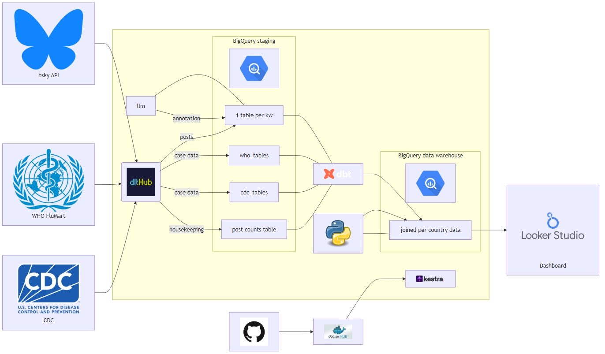
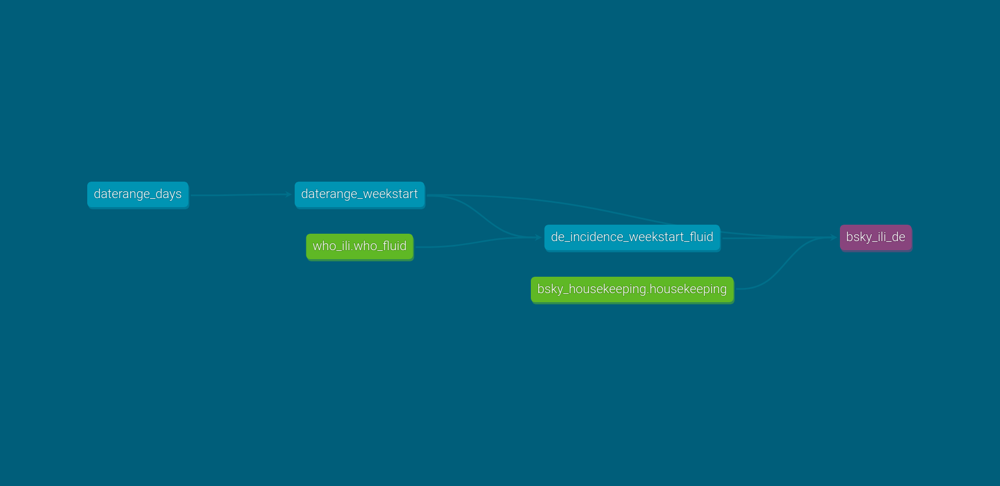

bluesky social network analysis pipeline
Use case for digital disease detection
Social media platforms have increasingly become valuable sources of real-time information, reflecting public sentiment and behavior. This project explores the potential of Bluesky, a relatively new social media platform, for digital disease detection (DDD), specifically focusing on influenza-like illness (ILI). By building an end-to-end data pipeline to collect, process, and analyze Bluesky data in conjunction with traditional epidemiological data sources from organizations like the WHO and CDC, this project aims to assess the feasibility and effectiveness of using Bluesky as an early warning system for disease outbreaks.
This is combined project for the 2025 Data Engineering Zoomcamp and my course in Digital Epidemiology at Hasselt University.
The idea is to extract an epidemiological signal from social media posts by counting posts matching queries related to ILI and correlate them with public health surveillance data. Similar studies have been performed using data from twitter who yielded promising results. For obvious reasons, this kind of study is not feasible anymore and blueksy is a potential alternative.
Pipeline schema

Tools
Data Sources
Bluesky API: This provides real-time access to posts and user data on the Bluesky platform.
WHO Data: Data from the World Health Organization (WHO) serves as a crucial epidemiological reference, offering reliable statistics on influenza and other diseases, but there are delays in publication.
CDC Data: Similar to the WHO, the Centers for Disease Control and Prevention (CDC) provides valuable data on disease prevalence and trends in the United States, but the dataset granularity is weekly. Up to December 2024 the data from the CDC were also incorporated into the WHO data but the data transmission to the WHO was stopped by the Trump administration.
Data ingestion
The data extraction and ingestion to the BigQuery staging area (data lake if you will) uses out-of-the-box functionality of dlt especially denormalization of the json data for bluesky posts.
Each pipeline is instantiated using the dlt init <source> <destination>, which creates the .dlt/ directory containing the necessary configuration files.
Credentials necessary to run the pipeline are stored in .dlt/secrets.toml which are used for testing and locally initiated runs of the pipeline.
In production, credentials are read from environment variables, see the paragraph on workflow orchestration.
Bluesky API
Two dlt pipelines were built using the bluesky API.
bluesky posts
Usage: bsky_post_pipeline.py QUERY START_DATE <flags>
optional flags: --end_date | --out_file | --n_jobs | --verboseThis pipeline retrieves posts matching a given search query on a given date or during a specified time window. It runs in parallel using at max. 50 connections/threads. The retrieved posts are transferred to BigQuery by dlt, each query has its own table.
bluesky post counts
Usage: bsky_housekeeping_pipeline.py QUERY START_DATE <flags>
optional flags: --end_date | --out_file | --n_jobs | --verboseThis pipeline is very similar to the bsky_posts pipeline. It is named housekeeping as it retrieves only aggregated post counts per query per date which serves as an indicator for overall user activity on bluesky.
WHO Data
Usage: who_ili_pipeline.py "{fluid | flunet}" <flags>
optional flags: --verboseCase data from the WHO are available in two datasets: FluID and FluNet which are made available in .csv files. pandas is used to load these files and dlt transfers them to a table in BigQuery.
CDC Data, RKI Data
Similar pipelines are implemented for data from the Centers for Disease Control and Prevention (CDC) and the Robert-Koch-Institute (RKI), the public health agencies of the USA and Germany, respectively. These pipelines are not used in the current project but might be in the future.
Data Transformation
Data transformation from the BigQuery staging area to the BigQuery data warehouse is accomplished using dbt. There is some complexity in aligning the time series of post counts from bluesky (daily data) to the public health data which is available aggregated by week.
The figure shows as an example of combining WHO surveillance data with bluesky post counts in German.

Time Series forecasting
CI/CD
Workflow automation with kestra
The pipeline is orchestrated using kestra. Basically, there is one flow defined for each extraction pipeline, building all the tables using dbt and fitting the machine learning models. (see flows).
All flows are chained together in a main flow which is triggered each night to ingest and process the data of the preceeding day.
Secrets and credentials handling
In the open-source version of kestra, secrets are handled via environement variables that need to be base64 encoded, prefixed with SECRET_ and passed to the the docker container on startup. I created a python commandline tool that abstracts some of the complexity : kestra_secret_encoder.
dlt
When dlt does not find a secrets.toml file, it looks for credentials in using specifically named environment variables. For BigQuery:
[./orchestration/kestra/flows/bsky_housekeeping.yml](./orchestration/kestra/flows/bsky_housekeeping.yml)
env:
DESTINATION__BIGQUERY__CREDENTIALS__PROJECT_ID: "{{ secret('BIGQUERY_PROJECT_ID') }}"
DESTINATION__BIGQUERY__CREDENTIALS__PRIVATE_KEY: "{{ secret('BIGQUERY_PRIVATE_KEY') }}"
DESTINATION__BIGQUERY__CREDENTIALS__CLIENT_EMAIL: "{{ secret('BIGQUERY_CLIENT_EMAIL') }}"(taken from ./orchestration/kestra/flows/bsky_housekeeping.yml)
dbt
For the production runs of dbt a special docker_config/profiles.yml is used with
dbt build --profiles-dir ./docker_configduring the runs.
It reads the credentials from environment variables:
yaml docker_config/profiles.yaml ... keyfile_json: type: service_account project_id: digepizcde private_key: "{{ env_var('DBT_BIGQUERY_PRIVATE_KEY') }}" client_email: "{{ env_var('DBT_BIGQUERY_CLIENT_EMAIL') }}" private_key_id: "{{ env_var('DBT_BIGQUERY_PRIVATE_KEY_ID') }}" client_email: "{{ env_var('DBT_BIGQUERY_CLIENT_EMAIL') }}" ...